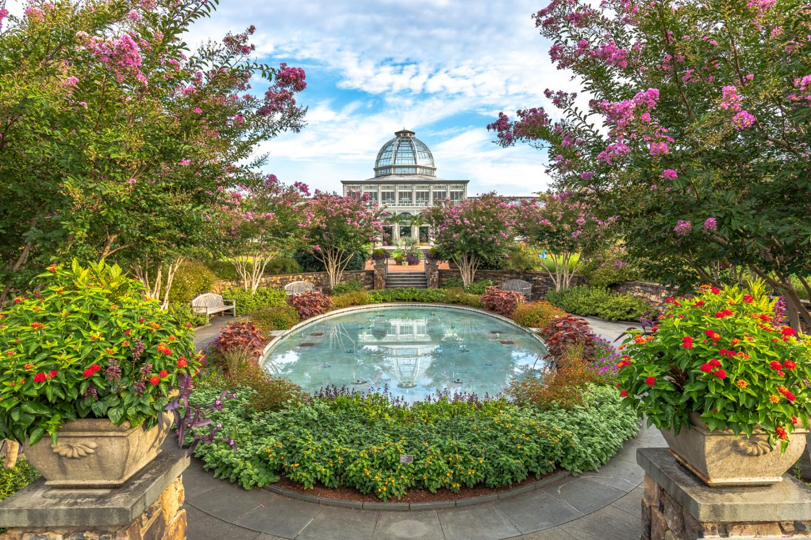

Our Mission
At Oasis Botanico, our mission is to celebrate and promote the rich diversity of botanical gardens across California. We are dedicated to providing a comprehensive platform where visitors can explore, discover, and rate these extraordinary green spaces. By highlighting the unique features, breathtaking landscapes, and botanical wonders of each garden, we aim to inspire a deeper appreciation for nature's beauty and foster a community of enthusiasts passionate about preserving and enjoying these treasured sanctuaries. Join us on our journey to cultivate a shared love for California's botanical heritage and empower individuals to connect with the natural world around them.
May 29
Spring
August 20
Summer